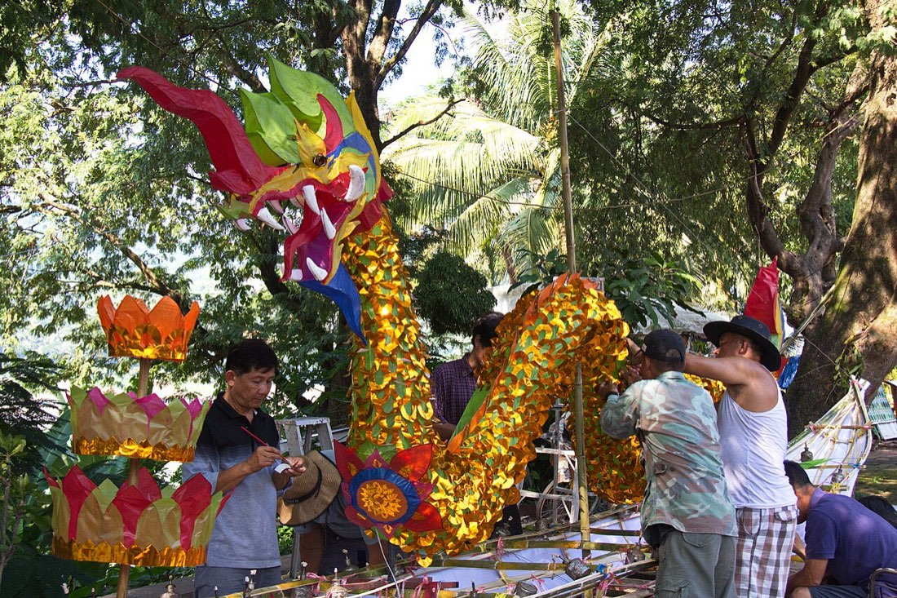
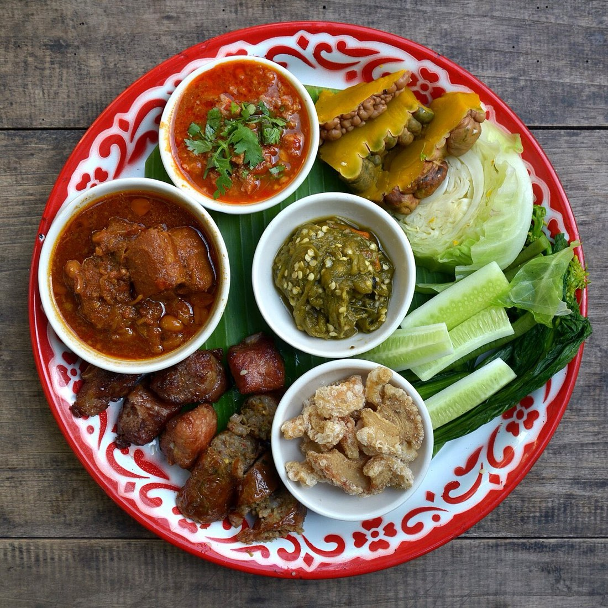
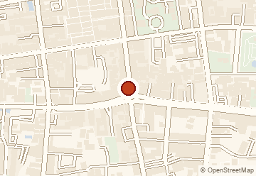
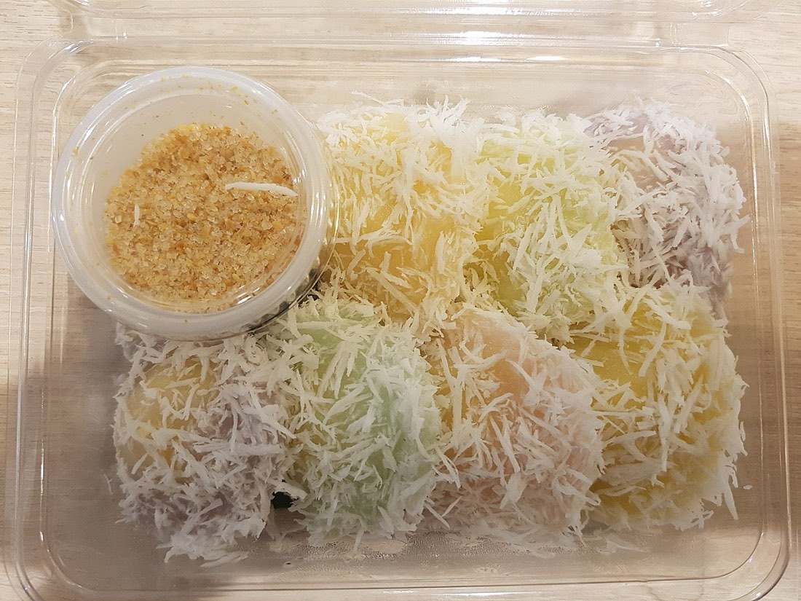
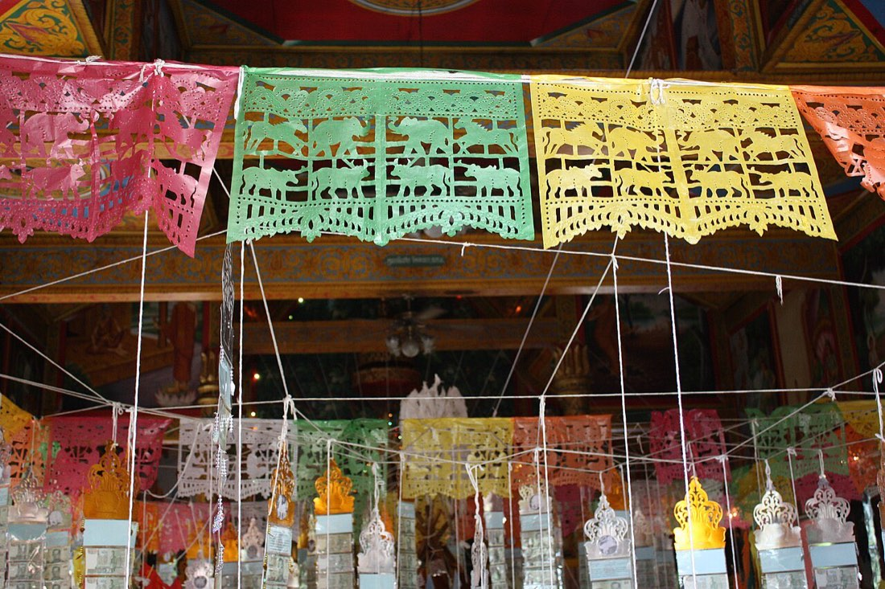
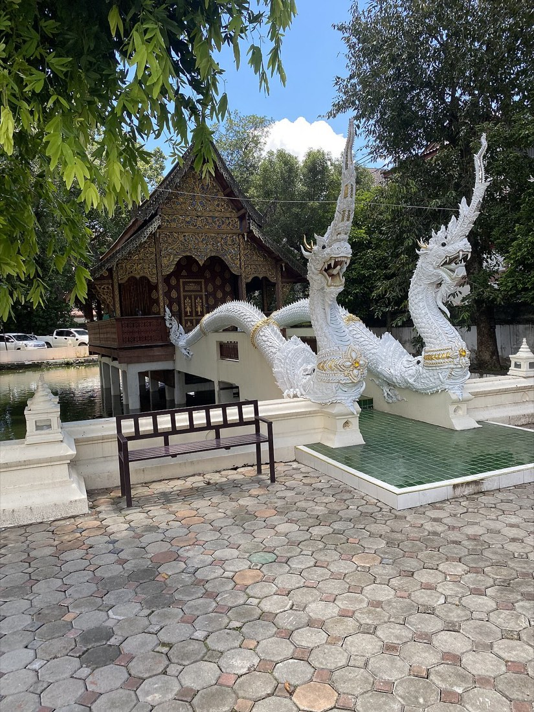
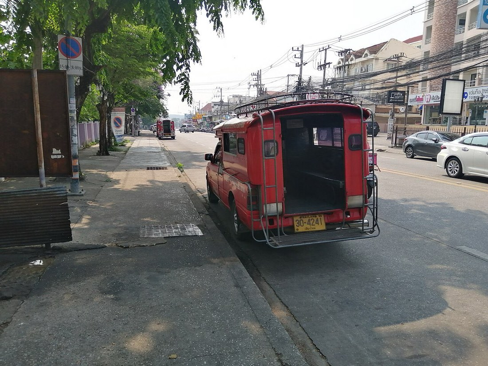
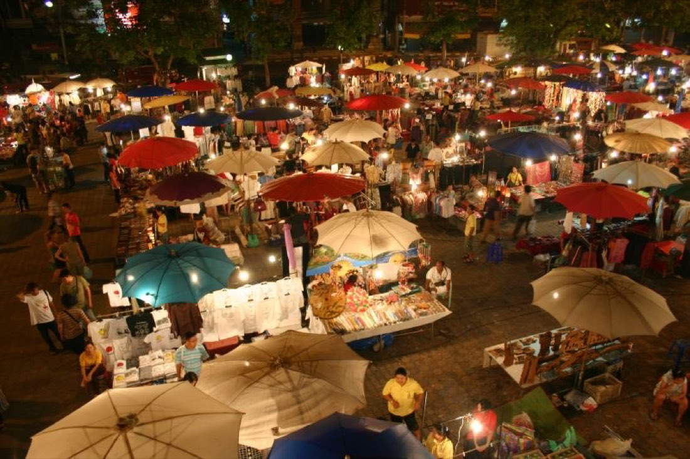
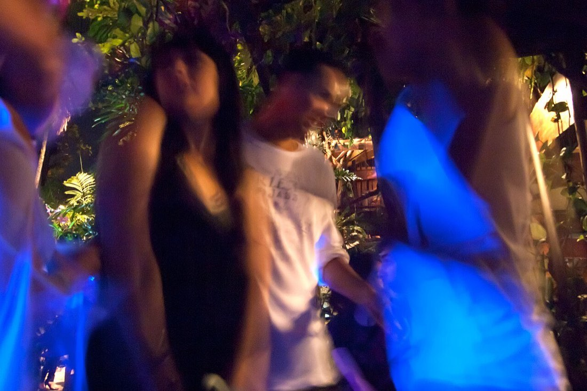

อยากกินอะไร อยากไปไหน · What do you feel like, and where are you going
มดแดงรู้ทุกซอย · the red ants know every lane
สารบัญเมืองเชียงใหม่และเชียงราย — วัด ร้าน หมอ ตลาด และของดีทุกซอย เรียงเป็นหมวดให้เปิดหาได้เหมือนสมุดหน้าเมือง · A city directory for Chiang Mai and Chiang Rai — wats, shops, doctors, markets, and the good things down every soi, sorted the old way.


ของดีอยู่ในซอย · the good stuff is down the lane📷 ASITRAC, Takeaway, Hans-Jürgen Neubert · เครดิตภาพทั้งหมด · all picture creditsวางแผนบ่ายนี้ · Plan your afternoon
ใหม่ · NEW
เลือกร้านก๋วยเตี๋ยว คลินิก ร้านทำเล็บ — จุดไหนก็ได้จากทั่วสารบัญนี้ — แล้วดูพร้อมกันในแผนที่เดียว พร้อมระยะทางจริงตามถนนแต่ละช่วง · Pick a noodle stand, a clinic, a nail place — any stops from anywhere in the directory — and see them together on one map, with the real street distance for every leg.
- เดินกับขี่มอเตอร์ไซค์ คิดแยกกัน เพราะมันไม่เหมือนกันจริงๆ — สะพานคนเดินมอเตอร์ไซค์ขึ้นไม่ได้ และถนนเดินรถทางเดียวทำให้ต้องอ้อม · Walking and riding are worked out separately, because they really are different journeys — a footbridge is no use to a scooter, and a one-way street means going round
- คิดตามถนนจริง ไม่ใช่ลากเส้นตรงข้ามตึกข้ามคูเมือง · Routed along real streets — not a straight line drawn through buildings and across the moat
- แชร์ทริปทั้งหมดเป็นลิงก์เดียว ส่งไลน์ให้ใครก็ได้ ไม่ต้องสมัคร ไม่เก็บข้อมูล · Share the whole run as one link over LINE — no account, nothing tracked
- ดาวน์โหลดเก็บไว้เป็นข้อความ พร้อมเบอร์โทรและเวลาเปิดของทุกจุด · Download it as plain text, with every stop's phone number and opening hours
| บินตรง · as the crow flies | 419 m | |
| 🚶 | เดินจริง · on foot | 560 m |
| 🛵 | ขี่มอเตอร์ไซค์ · on a scooter | 817 m |
ครอบคลุมในเวียงและรอบนอกราว ๒ กิโลเมตร · นอกเขตนี้บอกตรงๆ ว่ายังไม่ได้คิดตามถนน · Covers the old city and about 2 km around it — outside that, it says so plainly instead of guessing.
เชียงใหม่ · Chiang Mai
9,111 ที่ · places- วัด-สิ่งศักดิ์สิทธิ์Wats & Sacred Places307
- ร้านอาหาร-ของกินFood & Eats4,153
- นวด-สปาMassage & Spa294
- หมอ-คลินิก-โรงพยาบาลDoctors & Hospitals233
- ของจำเป็นประจำเมืองCity Essentials911
- โรงแรม-ที่พักHotels & Stays1,465
- โรงเรียนนานาชาติInternational Schools12
- ตลาดMarkets88
- ช้อปปิ้ง-ของฝากShopping & Gifts174
- อสังหาฯ-คอนโดReal Estate & Condos305
- รถ-เดินทางGetting Around269
- ช่าง-ซ่อมRepairs & Trades97
- เสริมสวย-ทำผมBeauty & Hair205
- สักยันต์-รอยสักTattoo & Sak Yant31
- สัตว์เลี้ยงPets52
- เรียน-กีฬาLearning & Sport150
- แม่บ้าน-ช่างสวน-ดูแลบ้านHome Services7
- ชมรม-สมาคมClubs & Community39
- ธุรกิจ-ค้าขายDoing Business45
- หนัง-คอนเสิร์ต-อีเวนต์Movies, Concerts & Events9
- พิพิธภัณฑ์-หอศิลป์Museums & Galleries44
- สวน-ที่พักผ่อนParks & Green Space116
- ที่เที่ยว-ของดีSights & Good Things165
เชียงราย · Chiang Rai
3,208 ที่ · places- วัด-สิ่งศักดิ์สิทธิ์Wats & Sacred Places289
- ร้านอาหาร-ของกินFood & Eats1,129
- หมอ-คลินิก-โรงพยาบาลDoctors & Hospitals4
- ของจำเป็นประจำเมืองCity Essentials347
- โรงแรม-ที่พักHotels & Stays470
- โรงเรียนนานาชาติInternational Schools2
- ตลาดMarkets51
- ช้อปปิ้ง-ของฝากShopping & Gifts99
- อสังหาฯ-คอนโดReal Estate & Condos17
- รถ-เดินทางGetting Around266
- ช่าง-ซ่อมRepairs & Trades83
- เสริมสวย-ทำผมBeauty & Hair78
- สักยันต์-รอยสักTattoo & Sak Yant4
- สัตว์เลี้ยงPets13
- เรียน-กีฬาLearning & Sport18
- แม่บ้าน-ช่างสวน-ดูแลบ้านHome Services3
- ชมรม-สมาคมClubs & Community55
- ธุรกิจ-ค้าขายDoing Business10
- หนัง-คอนเสิร์ต-อีเวนต์Movies, Concerts & Events4
- พิพิธภัณฑ์-หอศิลป์Museums & Galleries28
- สวน-ที่พักผ่อนParks & Green Space126
- ที่เที่ยว-ของดีSights & Good Things118
ของดีวันนี้ · Today’s picks
ดูทั้งหมด · See all →
หอนาฬิกาเฉลิมพระเกียรติฯ เชียงราย · Chiang Rai Clock Towerที่เที่ยว-ของดีSights & Good Things- Laila's Designer Consignmentช้อปปิ้ง-ของฝากShopping & Gifts
- River Tavernร้านอาหาร-ของกินFood & Eats
 วัดเชียงยืน · Wat Chiang Yuenวัด-สิ่งศักดิ์สิทธิ์Wats & Sacred Places
วัดเชียงยืน · Wat Chiang Yuenวัด-สิ่งศักดิ์สิทธิ์Wats & Sacred Places วัดป่าเป้า · Wat Pa Paoวัด-สิ่งศักดิ์สิทธิ์Wats & Sacred Places
วัดป่าเป้า · Wat Pa Paoวัด-สิ่งศักดิ์สิทธิ์Wats & Sacred Places วัดเชียงโฉม · Wat Chiang Chomวัด-สิ่งศักดิ์สิทธิ์Wats & Sacred Places
วัดเชียงโฉม · Wat Chiang Chomวัด-สิ่งศักดิ์สิทธิ์Wats & Sacred Places Chedi Liam Templeวัด-สิ่งศักดิ์สิทธิ์Wats & Sacred Places
Chedi Liam Templeวัด-สิ่งศักดิ์สิทธิ์Wats & Sacred Places วัดป่าแดง · Wat Padaengวัด-สิ่งศักดิ์สิทธิ์Wats & Sacred Places
วัดป่าแดง · Wat Padaengวัด-สิ่งศักดิ์สิทธิ์Wats & Sacred Places วัดทรายมูล · Wat Sai Munวัด-สิ่งศักดิ์สิทธิ์Wats & Sacred Places
วัดทรายมูล · Wat Sai Munวัด-สิ่งศักดิ์สิทธิ์Wats & Sacred Places
วันนี้สายไหน · What are you in the mood for

ร้านอาหาร-ของกินFood & Eats (4,153)
วัด-สิ่งศักดิ์สิทธิ์Wats & Sacred Places (307)- ตลาดMarkets (88)

ที่เที่ยว-ของดีSights & Good Things (165)- สวน-ที่พักผ่อนParks & Green Space (116)
- หนัง-คอนเสิร์ต-อีเวนต์Movies, Concerts & Events (9)
 พิพิธภัณฑ์-หอศิลป์Museums & Galleries (44)
พิพิธภัณฑ์-หอศิลป์Museums & Galleries (44) สักยันต์-รอยสักTattoo & Sak Yant (31)
สักยันต์-รอยสักTattoo & Sak Yant (31)
รถ-เดินทางGetting Around (269)
ร้านของคุณอยู่ในนี้แล้ว — มายืนยันเลยเจ้า · Your shop is already listed — come and claim it
ฟรี ไม่ต้องสมัครสมาชิก ไม่ต้องมีอีเมล แก้เบอร์โทร ไลน์ เวลาเปิด ได้เอง ขึ้นทันที · Free, no account, no email. Fix your phone number, your LINE and your opening hours yourself — it shows straight away.
ไปต่อไหม? · shall we keep going?

ตลาดกลางคืน-กาดแลงNight marketsของกินริมทาง ของฝาก ราคาคนท้องถิ่น · street food, gifts, and local prices88 แห่ง · places- หนัง-คอนเสิร์ต-อีเวนต์Films, gigs & eventsรอบหนังคืนนี้ คอนเสิร์ต และงานในเมือง · tonight's showtimes, gigs and what is on9 แห่ง · places

ร้านนั่งดึก-บาร์Late tables & barsร้านที่ยังเปิด เมื่อครัวบ้านปิดแล้ว · still open when the kitchen at home is not4,153 แห่ง · places
🎪 งานในเมือง · What is on ดูทั้งหมด · see all →
🎪 งานในเมือง · What is on ทั้งหมด · all →
🚻 ห้องน้ำใกล้ฉัน · Toilets near you
- ปั๊มน้ำมัน · Fuel stationฟรี · free
- โรงพยาบาล · Hospitalฟรี · free
- ห้างสรรพสินค้า · Shopping mallฟรี · free
- วัด · Templeฟรี · free
- สนามบิน · Airportฟรี · free
🎋 เซียมซี · Fortune sticks
🙏 มหาลาภ · Maha Lap
นะโม ตัสสะ ภะคะวะโต อะระหะโต สัมมาสัมพุทธัสสะ
Namo tassa bhagavato arahato sammāsambuddhassa
บทนอบน้อมพระพุทธเจ้า ใช้นำก่อนบททั้งปวง · The homage to the Buddha, said before any other verse.
นะ ชา ลี ติ
Na Cha Li Ti
คาถาที่คนไทยนิยมสวดขอเมตตามหานิยมและโชคลาภ ผูกกับพระสีวลีและนางกวัก · Widely recited in Thailand for goodwill and good fortune; associated with Phra Sivali and Nang Kwak.
🔮 ดวงวันนี้ · The reading today
อ่านจากวันประจำสัปดาห์ สี และกำลังพระเคราะห์ · Read from the weekday, its colour and its planetary strength
จากเสาวันในปฏิทินจีน 60 วัน · From the sexagenary day pillar
🌤 อากาศ · Weather
เลือกเมืองที่อยากดู · Choose the cities you want
🌬 ฝุ่น PM2.5 · The air
เลือกเมืองที่อยากดู · Choose the towns you want
☯ ก่วยประจำวัน · Hexagram of the day
謙 Qiān
Modesty
Height that stays low; modesty carries every undertaking through.
🪙 เสี่ยงทายเอง · Cast your own →วิธีเหมยฮวาอี้ซู่ ตั้งก่วยจากวันเวลา · Plum Blossom time method — the date builds the hexagram🕐 เทียบเวลา · Time conversion
เลือกเมืองที่อยากเทียบ · Choose the clocks you want
🎬 รอบหนังวันนี้ · Showtimes today
- สไปเดอร์-แมน แบรนด์ นิว เดย์145′11:3012:0012:3014:5015:3015:5018:1019:0019:1021:30
- มหาภัยสุดถนนโอ๊ค100′11:3012:3016:3017:3020:0021:40
- ล่าม106′15:00
- จดหมายรักถึงอาม่า118′11:3014:1016:5019:3022:10
- คำสารภาพของหมอผี126′12:3013:5015:1017:5019:0020:3021:30
- อีก 2 เรื่องที่โรงนี้ · 2 more films at this cinema
- คำสารภาพของหมอผี126′11:3016:30
- มหาภัยสุดถนนโอ๊ค100′14:1019:10
- มหากาพย์โอดิสซี173′21:30
- คำสารภาพของหมอผี126′11:3012:3014:1015:1016:5017:5019:3020:30
- สไปเดอร์-แมน แบรนด์ นิว เดย์145′12:0015:3019:0020:30
- ขบวนการเจ้าตูบสี่ขา เดอะ ไดโน มูฟวี่89′11:3016:00
- มหาภัยสุดถนนโอ๊ค100′13:4018:10
- สไปเดอร์-แมน แบรนด์ นิว เดย์145′12:0014:0015:3019:0020:00
- จดหมายรักถึงอาม่า118′12:30
- คำสารภาพของหมอผี126′11:3014:1015:1016:5017:5019:3020:30
- ขบวนการเจ้าตูบสี่ขา เดอะ ไดโน มูฟวี่89′11:3017:30
- มหาภัยสุดถนนโอ๊ค100′11:3014:1016:5019:30
- คำสารภาพของหมอผี126′11:0012:0013:4014:4016:2017:2019:0020:00
- สไปเดอร์-แมน แบรนด์ นิว เดย์145′12:0015:3019:00
- ขบวนการเจ้าตูบสี่ขา เดอะ ไดโน มูฟวี่89′11:3016:30
- มหาภัยสุดถนนโอ๊ค100′14:0019:00
🎟 ผลสลากกินแบ่ง · Lottery results
งวดวันอาทิตย์ที่ 16 สิงหาคม 2569 · Draw of Sunday 16 August 2026⚙ ปรับแต่งหน้าแรก · Personalize
ข่าววิ่ง · News ticker
ข่าวมดแดง · Word from the ants
มีงานบุญ งานประเพณี หรืออะไรใหม่ในเมือง เราจะบอก · นานๆ ที ไม่กวน · When a festival, a merit-making day or something new in town is worth knowing. Now and then, never often.
เก็บไว้ที่เราเท่านั้น · ยกเลิกได้ทันทีทุกฉบับ · Kept by us and nobody else. Every letter has a one-click unsubscribe.